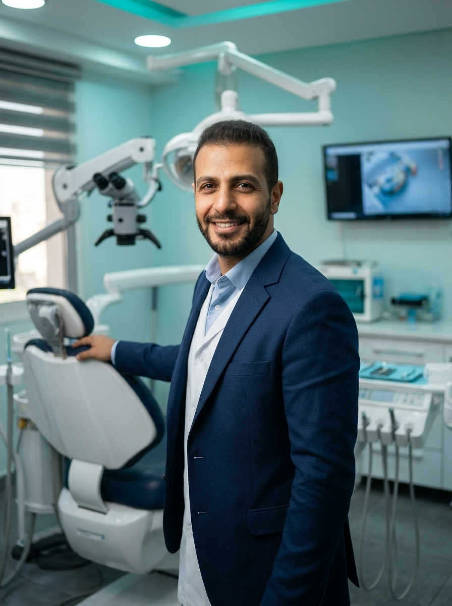
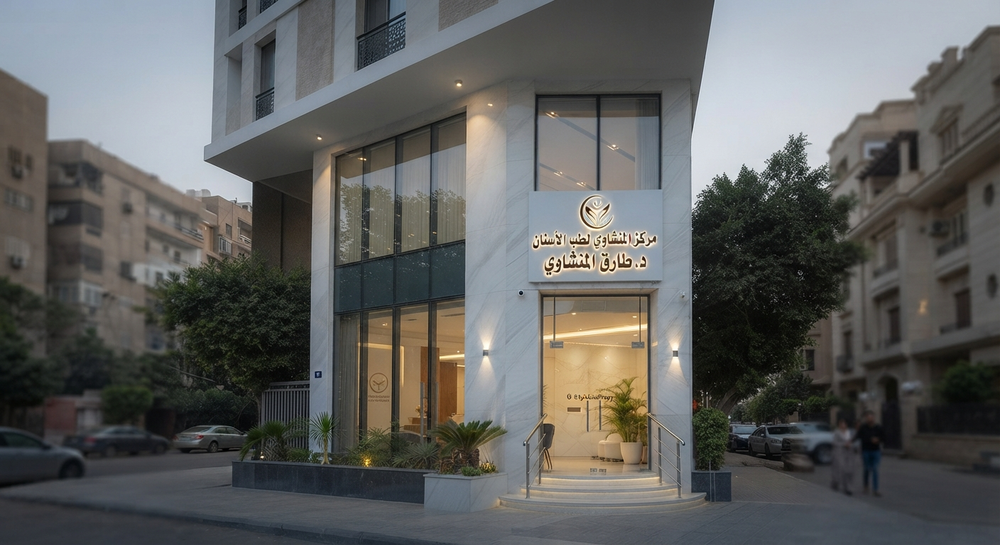

تجميل الأسنان والفينير
تصميم ابتسامة متناسقة وعدسات تجميلية عالية الدقة بمظهر طبيعي.
علاج بدون ألم بأحدث التقنيات الرقمية وأعلى معايير التعقيم لابتسامة تدوم.
تصميم ابتسامة متناسقة وعدسات تجميلية عالية الدقة بمظهر طبيعي.
تعويض الأسنان المفقودة بدقة رقمية عالية وراحة أكبر للمريض.
إجراءات علاجية وتقويمية مريحة تركز على تقليل الألم والسرعة في النتائج.

أكثر من 12 عاماً من الخبرة في تجميل الابتسامة وزراعة الأسنان بأحدث التقنيات الرقمية بدون ألم. نلتزم بأعلى معايير التعقيم والجودة لنمنحك ابتسامة صحية تدوم طويلاً.
| الأيام | الساعات |
|---|---|
| السبت – الخميس | 5:00 مساءً – 10:00 مساءً |
| الجمعة | إجازة |
العنوان التفصيلي: شارع 9، برج الأطباء، الدور الثالث، المعادي، القاهرة.
سعر الكشف: 400 جنيه مصري (شامل الاستشارة).
فتح الموقع على خرائط جوجل